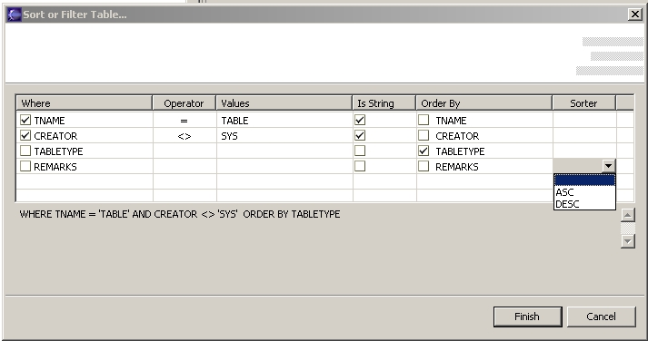
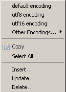
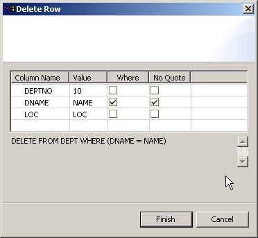

The Table View is where the queries against the database show their results. It looks like:
It's a display-only view. You cannot edit the results. It shows only the first 200 records of the resulting row set from you query. This number is configurable, in the preferences. You can navigate to the next group of records using the downward-pointing arrow in the toolbar . In this case the arrow is subdued because there are only 4 records in the table. It'll be shown yellow if active, that is if there are more records afterwards. The upward-pointing arrow makes the same work moving upwards in the row set. The third button allows you to see all your rows. Be careful with that if you have tables with many rows, it can take a long time and end up your memory.
The tab name in this case defaults to the name of the database bookmark against which the query was executed. You can see the query as a tooltip pop-up window if you hover the mouse pointer over the tab. If you opened a table or view directly from the bookmark view, then Quantum knows which table and schema is, and it shows it also in the tab.
The "X" sign in the toolbar closes the active tab, the two "X"s button closes all the open tabs. The two circling arrows reload the data from the database. You have to use it after inserting a new record, for example, to see it reflected in the table data. The last button allows filter and sorting. It'll display a dialog that will help you to build a WHERE clause and a ORDER BY clause, and automatically apply it to your row set. The displayed dialog is like this:

The generated WHERE and ORDER BY clauses appear in the lower part of the dialog, and you can select the intervening columns, the operators, etc. The working is rather straightforward. You hit the Finish button, and the filter-order gets applied. There is no provision for editing the existing filter. Next time you enter the dialog, it'll be blank.
Filter&Sort works only with tables and/or views, not with custom queries you can write. The reason is that when you double-click on a table or view, the query to display that table is generated by Quantum itself, so it can change the generation to reflect other ordering. When it's a custom query we would need some SQL syntax analysis to know how to change the query. That might be possible in a future, but not now.
The data in a database string can be converted into visual characters in many ways. To take into account such variability, the displaying of strings in the Table view allow for changes of encoding. To do that, just right-click on any point of the table view, and a context menu wll appear. If you see correctly your strings, you don't need to concern yourself with encoding changes.

The first section of the context menu allows you to select the encoding, listing the three most popular, and then another sub-menu Other Encodings has all the rest of encodings available in your java virtual machine. (Note that this feature "Other Encodings" is only available in java from version 1.4 onwards, so it won't work if you are using java 1.3 or older).
The next command is Copy, that will do a simple copy of the selected data, with the columns separated by spaces.
The next is Select All, that needs no introduction.
Then come three Wizards (hey! that could be a nice title for a fantasy book :), that help you create respectively an SQL Insert, Update, or Delete.
If you have the Export-Import (flatfiles) plugin installed, a new option will appear (Esport Result Set Data), that will allow you to export to some formats the resulting data from your query. Only the data that is really shown in the Table data will be exported.
The Insert wizards look like:
You fill up the values (in the Value column), and select Def. if you don't want to apply a value, and so the default value of the database for that column will apply. The wizard will automatically quote the appropiate values. If it's wrong, or you need a keyword (like NULL) or a function, you can tell the wizard not to quote that value with the NO Quote column.
Then you hit Finish and the Insert statement will be executed. Remember to hit the Refresh button in the Table View so that the inserted row gets reflected in your displayed data.
The Update Row Wizard helps you to create an UPDATE statement. Like in the Insert Row Wizard, you have first a column of names of your table columns, that you cannot alter, then another column with the actual values of the columns, that you also cannot alter. If you had a row selected when you enter the wizard, the values of that row will appear in this column. Then you can select if that "old value" will be used as part of the WHERE clause of the UPDATE. If you have a row selected in the Table View, and the row has a primary key, the columns of the primary key will be selected in this Where column.
Then you select the new values. Those default also to the old values, but can be changed. Then you select the "Set value" column to indicate that you really want to update that table column. You can review the generated UPDATE statement in the lower part of the dialog. There will be no UPDATE statement till you select at lease one "Set Value" check-box in the dialog, that is updating at least one column.
The wizard will automatically quote the appropiate values. If it's wrong, or you need a keyword (like NULL) or a function, you can tell the wizard not to quote that value with the NO Quote column. Same with the Key No Quote column, only that applies to values of the Where clause.
Similar to the other two, the Delete Wizard helps you to build a DELETE statement. For a DELETE statement, all you have to select is the WHERE clause. So you select the values that you want, in the "Values" column, and tell the wizard to use them in the WHERE clause by selecting the "Where" check-box.
If you have selected a row in the Table View when you enter the Delete wizard, and that table has a primary key, the columns of the primary key will appear already selected, allowing you to easily delete the row you have selected.
The wizard will automatically quote the appropiate values of the key. If it's wrong, you can tell the wizard not to quote that value with the Key No Quote column ,that applies to values of the Where clause.
